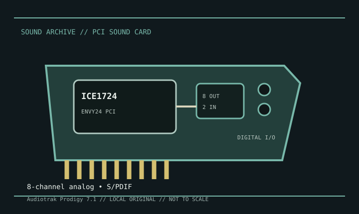

[ INDIVIDUAL MODEL // SOUND HARDWARE ]
Audiotrak Prodigy 7.1
The Audiotrak Prodigy 7.1 is a conventional PCI multichannel card built around VIA’s Envy24-family controller. This entry is for the original Prodigy 7.1; Prodigy 7.1 LT and Prodigy 7.1 HiFi are separately documented variants.

Detailed specifications
| Exact model / scope | Audiotrak Prodigy 7.1 PCI. Use the product label and corresponding original manual; do not assume LT/HiFi accessory and connector arrangements are identical. |
|---|---|
| Bus / host | Conventional PCI interface. It requires a legacy PCI-capable desktop host and model-compatible audio driver. |
| Controller / conversion | VIA Envy24-family multichannel controller. ESI specifies 24-bit/192 kHz D/A and 24-bit/96 kHz A/D converters, with 106 dB dynamic range for analog I/O; those converter ratings do not imply every channel can operate simultaneously at every maximum rate. |
| Analog / digital I/O | Two analog inputs and eight analog outputs (four stereo pairs), with a microphone preamp, +5 V phantom supply, and amplified headphone output. Coaxial S/PDIF input and output support up to 24-bit/96 kHz; this model page does not claim optical digital I/O. |
| Routing / driver modes | The official archive lists EWDM, DirectWIRE, and GSIF support for legacy Windows music applications. Available modes and latency depend on the original driver release and host software. |
| Drivers / operating systems | ESI maintains a Prodigy archive/download page with legacy software and documentation. Published drivers target period Windows versions; modern OS compatibility should not be inferred from a successful PCI enumeration. |
Compatibility & preservation
Preserve the Prodigy 7.1 label, card revision, manual, and legacy ESI/Audiotrak driver/control panel together. Test analog channel mapping and digital synchronization using the original documentation, especially when handling a variant or aftermarket bracket.
- Photograph the model marking, PCB revision, and all included brackets or cables before service.
- Save the matching driver, manual, and working host configuration; bus fit alone does not establish driver compatibility.
- Use the manufacturer’s model-specific pinout and routing diagram before connecting line, microphone, digital, or multichannel outputs.
Sources & documentation
- ESI — Audiotrak Prodigy 7.1 product archiveManufacturer archive for the Prodigy 7.1 model and its feature summary.
- ESI — Prodigy 7.1 download and manual selectionManufacturer download archive for selecting the model-specific English manual and legacy software.